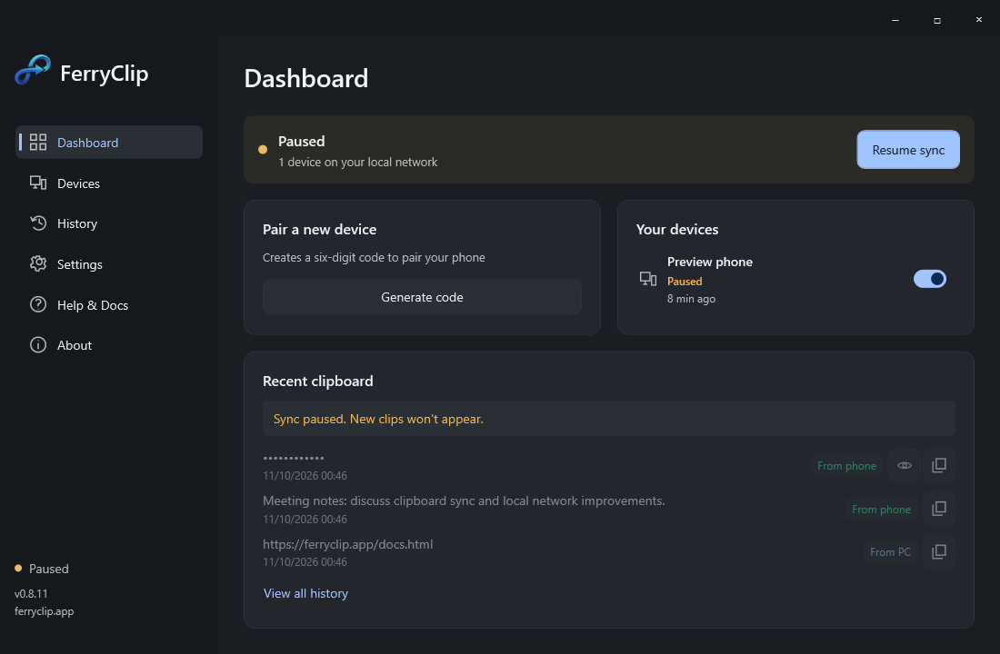
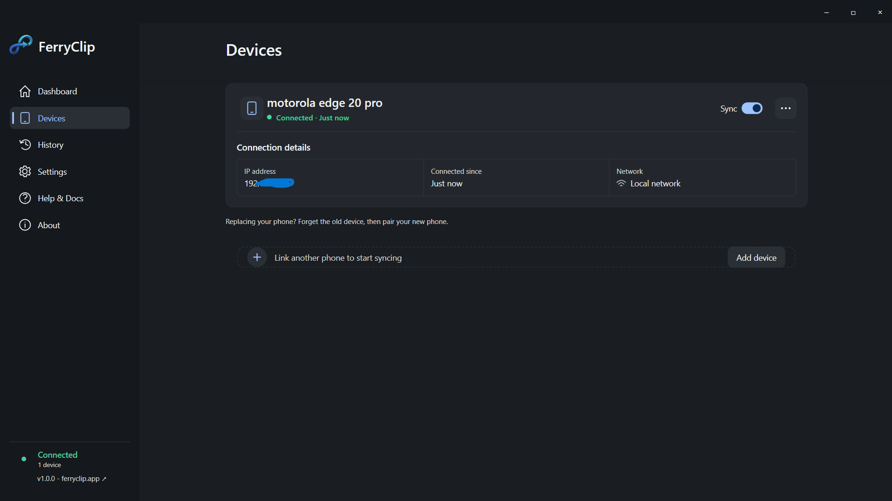
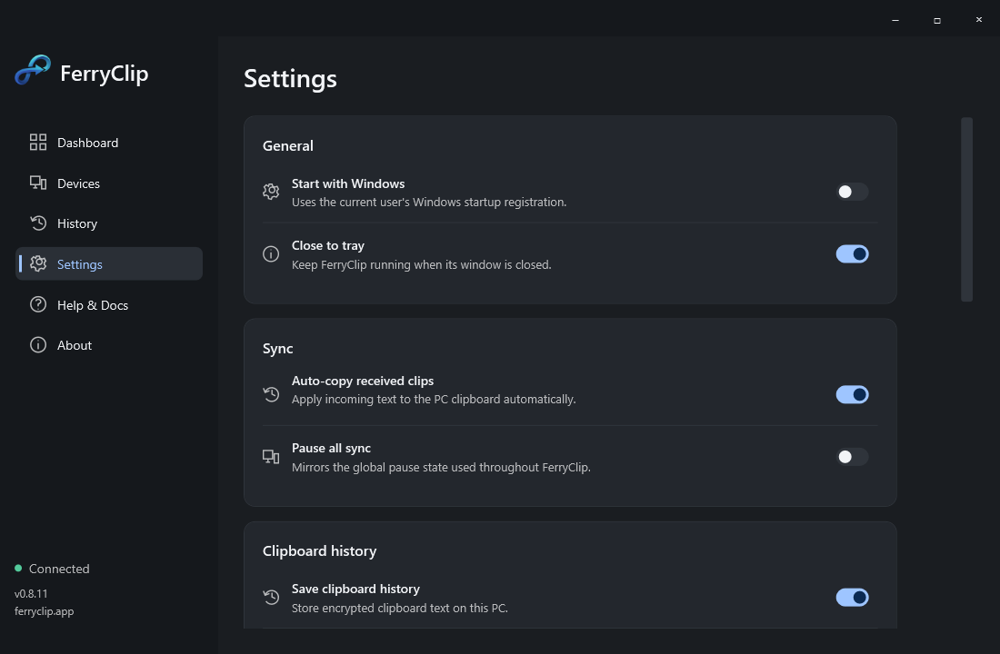

Same network.
Instant recognition.
Open FerryClip on Windows and Android. Join the same Wi-Fi, or your PC's hotspot. We'll look for your PC so you don't have to type an IP address.
Windows + Android · Local network · No account
Windows text syncs to your unlocked phone automatically. To send from Android, copy text and tap Send to PC. No cloud relay or account.
Keep that thought.
Right where
you need it.
Keep that thought.
What’s a tile? A shortcut beside Wi-Fi and Bluetooth when you swipe down twice.
Add it once: Edit / pencil → drag Send to PC into active tiles → Done. Then copy text and tap it to send to Windows. The notification’s Send clipboard now action works too.
Read the tile setup guideThe Windows app
Real captures of the Windows app.
History previews use sample text.



A connection that stays out of the way
Three small steps. No new keyboard,
no developer settings, no extra accounts.
Open FerryClip on Windows and Android. Join the same Wi-Fi, or your PC's hotspot. We'll look for your PC so you don't have to type an IP address.
Choose Generate code to connect on Windows. On Android, enter the temporary code shown on Windows to pair securely.
PC text arrives on your phone automatically. In the other direction, copy text and tap Send to PC in the notification or Quick Settings. One intentional tap.
Show me the shortcutSmall utility. Thoughtful details.
A small utility, with the details handled.
Built to live in the background.
FerryClip checks nearby services, your saved address, and the PC hotspot. A changed IP doesn't mean pairing all over again.
TLS 1.3, mutual authentication, and a pinned device identity. No account or server storing your copied text.
Android protects clipboard reads. We respect that. Copy text, then tap Send to PC—no silent background reading.
What's a Quick Settings tile? →Saved clipboard history is encrypted and configurable on each device. Set a history limit and retention, skip sensitive clips, or turn saving off.
Pause syncing
A little breathing room,We brought the instructions.
One app on each device.
FerryClip syncs clipboard text between Windows and Android over your local network using TLS. No cloud clipboard.
All releases ↗Installer recommended
Download installer Portable ZIPRelease APK · signed with the project key
Download Android APKAndroid may ask you to allow your browser or file manager to install unknown apps.
Before you get started
Quick help with setup, syncing, and the things people ask most.
Read the setup guide →Clipboard traffic goes directly over your local network. Your devices need to be on the same reachable Wi-Fi or PC hotspot; internet is only needed to download the apps or open online help.
Android restricts background clipboard reads. Tap Send clipboard now in the notification, or Send to PC in Quick Settings, to deliberately share your copied text. No extra keyboard or helper app is needed.
Incoming PC text is applied when you unlock. Clipboard history is separate: when enabled, clips are stored encrypted on each device and can be limited or cleared in Settings. Android may still show its system clipboard indicator.
FerryClip currently supports plain text between Windows and Android. Image transfer, iOS, and remote internet syncing are not included.
Once paired, Windows copies sync to your unlocked Android phone automatically. To send the other way, copy text on your phone and tap Send to PC in the notification or Quick Settings tile.